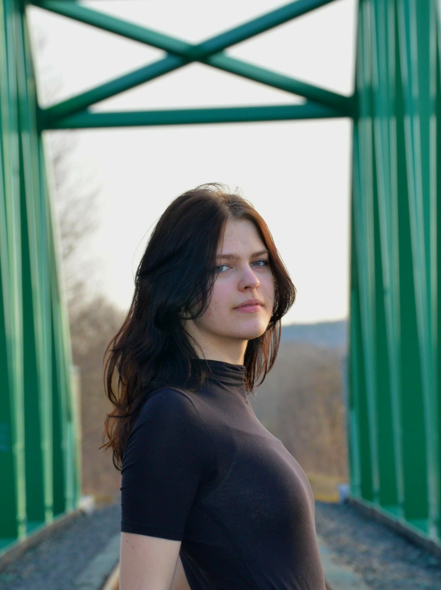

This website was created in 2026 as a project for the Web Programming course at Vilnius University, Faculty of Mathematics and Informatics (MIF), Information Technologies study programme.
The idea behind it is simple: a personal space to mark and store your best travel memories. No ads, no followers, no algorithms — just you and your journeys. Think of it as a digital travel diary, where every pin on the map tells a story.
Unlike social media platforms, this website is designed to be private and personal. You can add photos, write descriptions, and revisit your memories whenever you like — without the noise of likes or comments.
The project is still growing. Future plans include the ability to share selected albums with friends and family, improved map filtering, and richer photo galleries for each location.

My name is Skaistė and I am a student from Lithuania. I study at Vilnius University, Faculty of Mathematics and Informatics, currently in my second year of Information Technologies.
If you're visiting my page, you are either my professor grading my work, or a fellow travel enthusiast just like me!
Recently I have been traveling more than usual. It started with hikes through the beautiful nature of Lithuania with my mom, but since then I have explored a little bit of Poland, Latvia, Spain, Sweden, and Denmark — as well as many cities across Lithuania.
Sadly, I could never find an app or website where I could store my travel photos and write descriptions without it being a social media platform. I wanted a calm, personal space to keep my memories and look back on them whenever I wanted. So I decided to build one myself!
I was heavily inspired by an app called THE COUPLE, made for partners to track relationship milestones. I wanted something similar — but for travel lovers.
Created by:
— Skaistė Rutkauskaitė